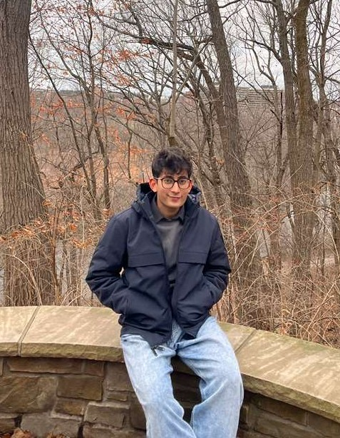

Hi! I’m a master’s student at George Washington University, and my research interests include post-training and alignment of large language models, particularly how we can align LLMs to capture diverse and pluralistic human values, how we can avoid the homogeneity of responses that could arise from RLHF, and post-training more generally. I am also interested in applying deep learning to genomic sequence data. Previously, I worked with Dr. Kapil Ahuja at the Mathematics of Data Science and Simulation lab in the Indian Institute of Technology Indore on DNA Gap prediction using Deep learning.
Alignment techniques today produce a single policy that best represents the combined aggregate preference. The diversity of human values is reduced to a single mode. This project seeks to explore computationally efficient ways to train or steer models that can represent and operate across multiple value systems simultaneously, while mitigating the homogeneity in responses found in LLMs.
LLMs hallucinate that they produce confident, fluent, and incorrect outputs. This project takes a Representational perspective: Where in the model's internal geometry do hallucinations live? By probing activations of factual vs. hallucinated content, we aim to understand hallucination as a geometric phenomenon and derive principled interventions.
I am actively looking for internships for Summer 2026 in Machine Learning Enigneering, Deep Learning, and Natural Language Processing. I would also be very grateful for a research internship if you are working on something related to alignment, LLM post-training, or ML for biology, I would love to connect!